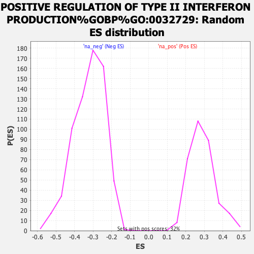

| | | Dataset | ranked_genes_2 |
| Phenotype | NoPhenotypeAvailable |
| Upregulated in class | na_pos |
| GeneSet | POSITIVE REGULATION OF TYPE II INTERFERON PRODUCTION%GOBP%GO:0032729 |
| Enrichment Score (ES) | 0.5611765 |
| Normalized Enrichment Score (NES) | 1.9721626 |
| Nominal p-value | 0.0 |
| FDR q-value | 0.109412424 |
| FWER p-Value | 0.705 |
Table: GSEA Results Summary
 Fig 1: Enrichment plot: POSITIVE REGULATION OF TYPE II INTERFERON PRODUCTION%GOBP%GO:0032729
Fig 1: Enrichment plot: POSITIVE REGULATION OF TYPE II INTERFERON PRODUCTION%GOBP%GO:0032729
Profile of the Running ES Score & Positions of GeneSet Members on the Rank Ordered List
| SYMBOL | RANK IN GENE LIST | RANK METRIC SCORE | RUNNING ES | CORE ENRICHMENT | | 1 | F2RL1 | 3 | 6.084 | 0.1033 | Yes |
| 2 | FZD5 | 236 | 4.865 | 0.1681 | Yes |
| 3 | ISG15 | 639 | 4.053 | 0.2059 | Yes |
| 4 | CD276 | 725 | 3.924 | 0.2661 | Yes |
| 5 | TLR4 | 807 | 3.814 | 0.3248 | Yes |
| 6 | IL18 | 1011 | 3.547 | 0.3694 | Yes |
| 7 | PYCARD | 1089 | 3.452 | 0.4222 | Yes |
| 8 | TRIM27 | 1171 | 3.353 | 0.4730 | Yes |
| 9 | FADD | 1446 | 3.053 | 0.5037 | Yes |
| 10 | ZP3 | 1608 | 2.901 | 0.5406 | Yes |
| 11 | CD14 | 2162 | 2.374 | 0.5381 | Yes |
| 12 | JAK2 | 2355 | 2.233 | 0.5612 | Yes |
| 13 | HLA-A | 3346 | 1.348 | 0.5073 | No |
| 14 | PDE4D | 4511 | 0.562 | 0.4265 | No |
| 15 | IL1R1 | 4624 | 0.491 | 0.4262 | No |
| 16 | TYK2 | 5522 | 0.068 | 0.3577 | No |
| 17 | SLC7A5 | 5870 | -0.046 | 0.3316 | No |
| 18 | EBI3 | 6508 | -0.322 | 0.2876 | No |
| 19 | HSPD1 | 7545 | -0.922 | 0.2229 | No |
| 20 | CEBPG | 8717 | -1.760 | 0.1620 | No |
| 21 | ZFPM1 | 8800 | -1.820 | 0.1866 | No |
| 22 | SCRIB | 9595 | -2.406 | 0.1659 | No |
| 23 | BTN3A1 | 9598 | -2.409 | 0.2068 | No |
| 24 | BTN3A2 | 10268 | -2.938 | 0.2049 | No |
Table: GSEA details [plain text format]

Fig 2: POSITIVE REGULATION OF TYPE II INTERFERON PRODUCTION%GOBP%GO:0032729: Random ES distribution
Gene set null distribution of ES for POSITIVE REGULATION OF TYPE II INTERFERON PRODUCTION%GOBP%GO:0032729